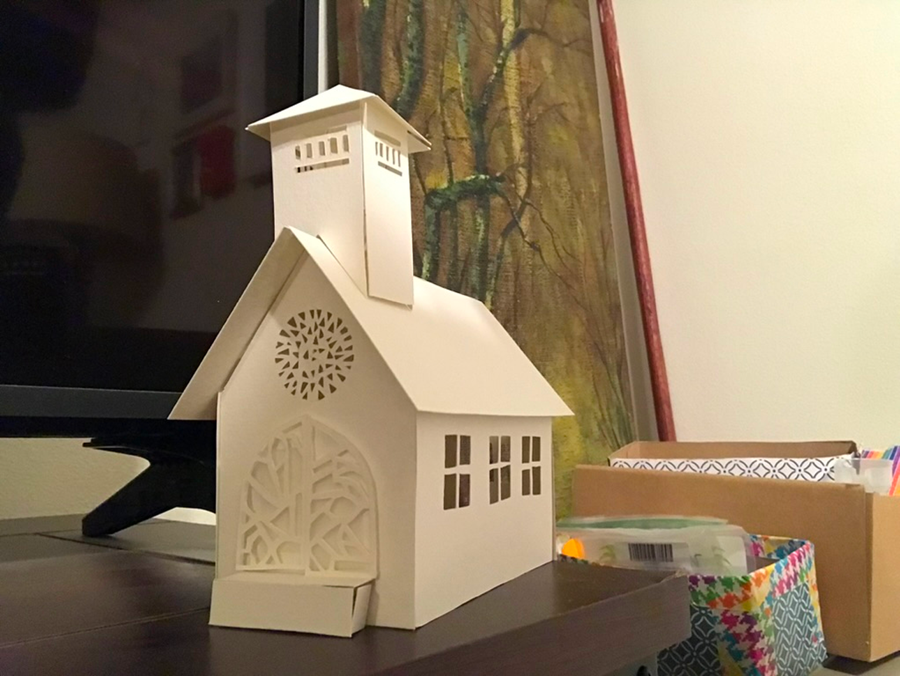
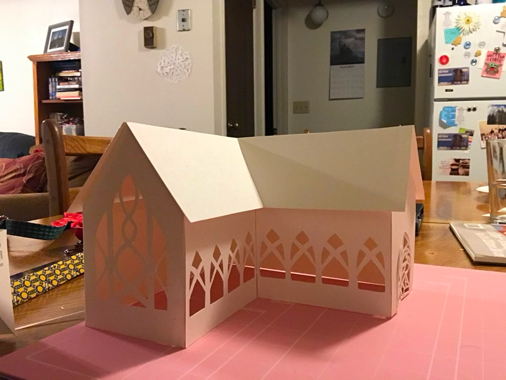

The first one was just something I put together — mostly figuring out how the walls scored and folded into a building as I went.

The second one I slowed down for — real cutouts instead of just window holes, and a lot more care in how precisely everything fit together.

It wasn’t for anything — just a college side project I fully enjoyed, start to finish.